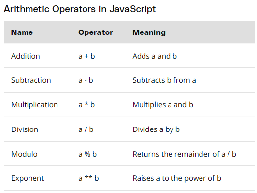
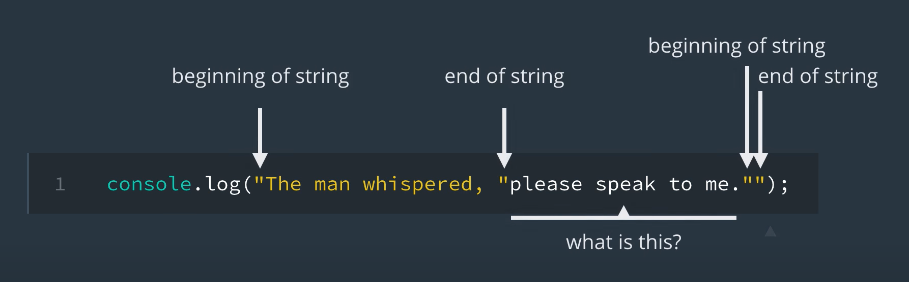
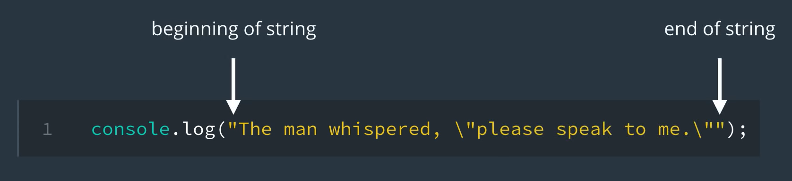
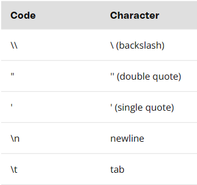

Open developer tools
CLick on "Console"
Writing code in your browser is a thing to test new code snipets to determine what they do.
This is not recommended to write larger blocks of code as this can get tedious.
Some useful shortcuts to open these developer/console are ctrl+shift+J
Each browser may have its own shortcuts and devtools different from one another.
You can open Chrome DevTools a few ways in Google Chorme:
Firefox has a a Developer Edition Browser tailored for developers featuring the latest features and experimental developer tools.
You can view the developer edition here:
Firefox Browser Developer Edition
To open FireFox Developer Tools:
Microsoft Edge introduced imporvements to the F12 developer tools seen in IE.
The new tools always run so no reloud is required.
Developer tools documentation is fully available on Github
To open Microsoft Edge Developer Tools:
Developer tools are a great way to experiment without saving changes to your code. The console will tell you any JS warnings or erros on the page, display any output or print with console.log
console.log is used to display content to the JavaScript console.
Example: console.log("Hellow world!");
This may be helpful when needing to debug code.
In the console, try the following:
for (var i = 0; i < 10; i++){
--console.log(i);
}
Other console methods
Data/data types hlep organize information and determine how our program will run.
Primitive data types of JavaScript
Number data types include any positive, negative or decimal value. Entering a number in the console will return it
Calculations are performed by typing out an expression
You can compare greater than a>b, less than a<b, or equal a==b.
Comparisions will return true or false.
Note:Comparison operators return true or false; true/false are boolean data type
Strings are any character or compination of characters, including emojis.
To declare a string, you must use matching quotes at the beginning and end of the string. Without quotes, the data type is registered as a variable.
example: console.log("example string");
Adding strings together is called concatenating.
To concatenate strings together:
"Hello " + "world!"
console.log("Hello " + "world!");
Note: Strings do include whitespace or spaces.
To access individual characters in a string, use the character's location (or index) starting with 0.
Example: "Example"[2] will return "a"
Usually the index of a string will be tied to a variable
Exapmle: const animal = "dog";
animal[1]; Returns "o"
Some cases a string may need to be created with quotes. Normally just typing a string with quotes will end the string and cause an error.
var example = "Typing a string, "with quotes will throw an error"."

To avoid this error, you will need to add \ in front of the quote in the string to avoid this
var example = "Typing a string, \"with quotes will not throw an error\"."

JavaScript has a few special charactes to avoid errors when typing code.

Variables store data
To create a variable in JavaScript, use var keyword followed by the name of the variable.
Then the assignment variable = and the value.
Example: var dog_name = "socks"; or var age = 27;
to update the variable after it has been declared - age = age + 1;
JavaScript has three types of variables: var, let, and const
var has a global scope: It can be used anywhere in the program.
let should be used when a value of a variable may change
const should be used when the value of a variable is known and will not change.
The default choice should typically be const to avoid the variable being updated unintentionally which could lead to bugs.
let should be used only when you know a variable will have an updated value as the code runs.
Code may always be revised; however, it is much easier catching a bug caused by a variable if it was const and it attempted to be changed later on
Boolean values can only be TRUE or FALSE.
Booleans are mainly used to evaluate the outcome of conditionals (comparisions).
Similar to how a variable can be set to a value of 10, a variable may be intentionally set to a value of null.
var x = 10;
var x = null;
Unlike how null has a value> set to nothing, undefined means there is no value set.
If a variable has been declared without setting a value or no variable has been declared but is trying to be used, you will get a variable declared undefined.
The following example explains why an "undefined" might come up:
var = x;
console.log(x);
console.log(y);
NaN stands for "Not-A-Number". Often indicates an error when returning an error with a nubmer operation.
If...else statements allow execution of certain pieces of code based on condistions being met.
if {
condition 1 met = run code
}
else {
condition 2 met = run this code
}
Truth tables are used to represent all possible combinations of inputs that return a boolean value. It breaks down the returned result of && and ||.